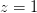
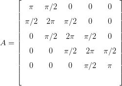
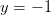
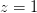
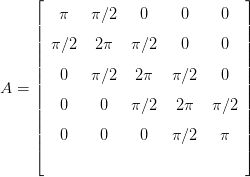
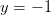
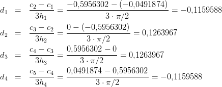
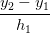

4.1 Eliminação gaussiana
Lembramos que algumas operações feitas nas linhas de um sistema não alteram a solução:
- Multiplicação de um linha por um número
- Troca de uma linha por ela mesma somada a um múltiplo de outra.
- Troca de duas linhas.
O processo que transforma um sistema em outro com mesma solução, mas que apresenta uma forma triangular é chamado eliminação Gaussiana. A solução do sistema pode ser obtida fazendo substituição regressiva.

Solução. A matriz completa do sistema é escrita como
 |
Encontramos  , ou seja, . Substituindo na segunda equação,
temos , ou seja,  e finalmente
, ou seja, . Substituindo na segunda equação,
temos , ou seja,  e finalmente  , resultando
em
, resultando
em  .
. 
4.1.1 Eliminação Gaussiana com pivotamento parcial
A Eliminação Gaussiana com pivotamento parcial consiste em fazer uma permutação de linhas de forma a escolher o maior pivô (em módulo) a cada passo.

Solução. A matriz completa do sistema é
 |
Encontramos , ou seja, . Substituímos na segunda equação
e temos  , ou seja,
, ou seja,  e, finalmente
e, finalmente  , resultando
em
, resultando
em  .
. 

Solução. Construímos a matriz completa:

 ,
,  e
e  .
. 
Exemplo 4.1.4 (Problema com elementos com grande diferença de escala).

 e
e
 :
:

Temos


Observe que a expressão obtida para  se aproximada de
se aproximada de  quando
quando  é pequeno:
é pequeno:

 depende justamente da diferença
depende justamente da diferença  :
:

Assim, quando  é pequeno, a primeira expressão, implementado
em um sistema de ponto flutuante de acurácia finita, produz
é pequeno, a primeira expressão, implementado
em um sistema de ponto flutuante de acurácia finita, produz  e,
consequentemente, a expressão para
e,
consequentemente, a expressão para  produz
produz  . Isto é, estamos
diante um problema de cancelamento catastrófico.
. Isto é, estamos
diante um problema de cancelamento catastrófico.
Agora, quando usamos a Eliminação Gaussiana com pivotamento parcial, fazemos uma permutação de linhas de forma a escolher o maior pivô a cada passo:

Continuando o procedimento, temos:

Observe que tais expressões são analiticamente idênticas às anteriores, no
entanto, são mais estáveis numericamente. Quando  converge a zero,
converge a zero,  converge a
converge a  , como no caso anterior. No entanto, mesmo que
, como no caso anterior. No entanto, mesmo que  , a segunda
expressão produz
, a segunda
expressão produz  , isto é, a aproximação
, isto é, a aproximação  não depende mais de
obter
não depende mais de
obter  com precisão.
com precisão.